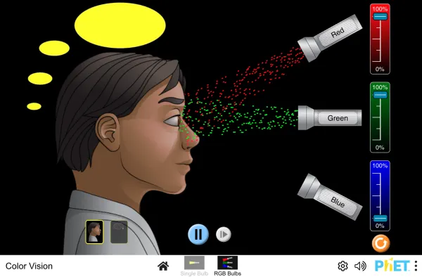

Creation of Colors in the Visual System
The creation of colors in the visual system involves a complex process that begins with the differential stimulation of different types of photoreceptors in the eye. These photoreceptors, known as cones, are sensitive to different wavelengths of light, corresponding to red, green, and blue light. When light enters the eye, it stimulates these cones, which then emit outputs that are propagated through many layers of neurons. This process is further refined through opponent processes, which are mechanisms that interpret color in an antagonistic way. According to Hering’s opponent-process theory, there are three pairs of opposing colors: red vs. green, blue vs. yellow, and black vs. white. However, in the visual system, the activity of different receptor types is opposed, leading to a more complex interaction that goes beyond simple red-green and blue-yellow opposition.
